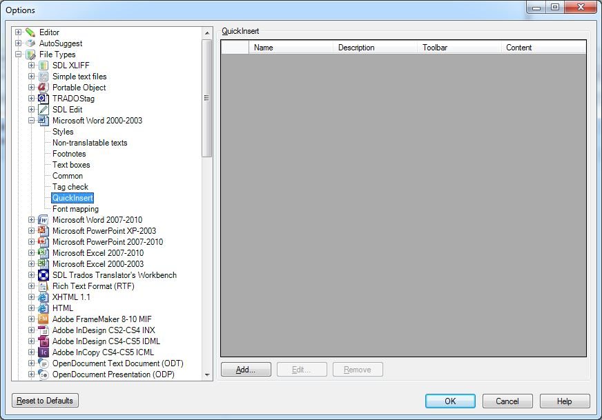
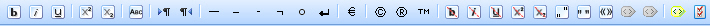
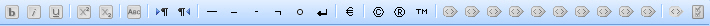
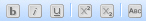
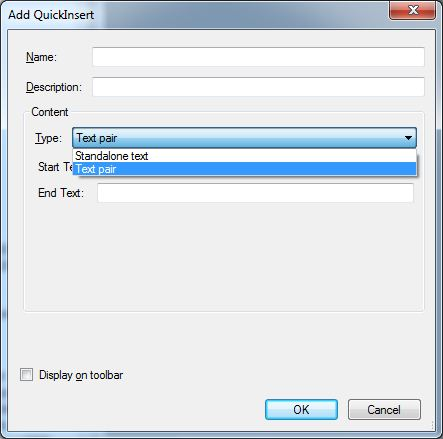

Implementing QuickInsert functionality
QuickInsert extends your file type plug-in by letting users insert inline tags, placeholders, strings, string pairs, and characters that may be difficult to type on some keyboards, such as ç or ©.
About QuickInsert
QuickInsert, formerly QuickTag, inserts bilingual content into the localizable document through the QuickInsert toolbar in Trados Studio. This bilingual content can include File Type Support Framework items such as ITagPair, IPlaceholderTag, IText, Location, ICommentMarker, and ILockedContent.
QuickInsert lets users insert the following items into target segments:
- Inline tags: for example, tag pairs that apply bold formatting
- Text pairs: start and end text inserted before and after the current selection, for example German smart quotes
- Standalone text: simple text such as special characters like ®, which replaces the current selection when inserted
QuickInsert items can be specific to a file type. For example, HTML uses B tags to apply bold formatting, while DOC files use CF tags. As a result, each file type plug-in can have its own QuickInsert items.
The following example shows the QuickInsert settings page for the standard Microsoft Word 2007 file type plug-in.
Note
In the UI only QuickInserts specified by user are displayed, the default QuickInserts are only displayed on the Trados Studio toolbar.

When you open a DOC file in Trados Studio, the QuickInsert toolbar looks like this:

Because the sample file type plug-in does not have any assigned QuickInsert items yet, the toolbar looks like this after you open a .text file:

Apart from a few default character assignments that work in any format, such as dash and copyright, all other toolbar buttons are unavailable because they are not assigned.
Some inactive buttons are intended for common character formatting such as bold and underline. Because formats use different tags for this formatting, you must assign the corresponding QuickInsert items for each file type plug-in.

There are also unassigned buttons for custom QuickInsert items such as extra formatting, strings, and string pairs. You can change the generic icons for these buttons programmatically or through the UI.
Modify the file type component builder
To associate your sample file type plug-in with a settings page that lists the QuickInsert items, add the following code to the BuildFileTypeInformation method in the SimpleTextFilterComponentBuilder class.
info.WinFormSettingsPageIds = new string[]
{
"SimpleText_Settings",
"QuickInserts_Settings",
};
WinFormSettingsPageIds specifies the IDs of the settings pages associated with a file type plug-in. In this example, QuickInserts_Settings adds a settings page that lists the QuickInsert items. This code was added in an earlier chapter, so do not add it again.
After you associate the QuickInsert settings page, Trados Studio shows a QuickInsert link under your sample file type plug-in in the Options dialog box. This is the first UI that you add for the plug-in, but the QuickInsert list is still empty.
You can click Add to define your own QuickInsert items. However, this standard UI only supports standalone text and text pairs.

Define QuickInsert items programmatically
You can add QuickInsert items through the UI and deploy them in the settings export format as a .sdlfiletype file. However, that approach has limits. If you generate QuickInsert items programmatically, you get full control over the QuickInsert mechanism.
Assume that you want to assign a B tag pair to the corresponding default button in the QuickInsert toolbar and assign German quotes, a text pair, to one of the custom QuickInsert buttons.
Start by adding a class such as QuickInsertBuilder.cs to your project. Derive the class from AbstractQuickTagBuilder. The class must reference the Sdl.FileTypeSupport.Framework.Core.Utilities.IntegrationApi namespace. The following example assigns the appropriate tag pair to the standard bold formatting button and a text pair, German quotes, to the first custom QuickInsert button.